Aplicación 1.1.b (Gestión y representación gráfica de datos): Gestión de datos con R y Python
En esta aplicación se usarán las librerías estándar de R y Python en “ciencia de datos” (data science), replicando los resultados con los correspondientes comandos en ambos lenguajes. En concreto, para el lenguaje R se utilizará la colección de librerías contenidas en el paquete Tidyverse (https://www.tidyverse.org/packages/), y para Python se usarán las librerías NumPy (https://numpy.org/), pandas (https://pandas.pydata.org/), Matplotlib (https://matplotlib.org/) y seaborn (https://seaborn.pydata.org/). Las librerías especializadas en estadística y econometría se verán en aplicaciones posteriores.
Sobre los datos utilizados:
- Datos para el ejemplo :
palmerpenguins(https://allisonhorst.github.io/palmerpenguins/)
Código R
Lectura de librerías
library(tidyverse)
library(palmerpenguins) # Datos de la aplicaciónLectura de datos
data("penguins")
df <- penguins
df %>%
head()# A tibble: 6 × 8
species island bill_length_mm bill_depth_mm flipper_length_mm body_mass_g
<fct> <fct> <dbl> <dbl> <int> <int>
1 Adelie Torgersen 39.1 18.7 181 3750
2 Adelie Torgersen 39.5 17.4 186 3800
3 Adelie Torgersen 40.3 18 195 3250
4 Adelie Torgersen NA NA NA NA
5 Adelie Torgersen 36.7 19.3 193 3450
6 Adelie Torgersen 39.3 20.6 190 3650
# ℹ 2 more variables: sex <fct>, year <int>Análisis exploratorio
Recuento de casos:
Recuento de los NAs en cada columna
df %>%
summarize(across(.cols = everything(),
~sum(is.na(.x)))) %>%
pivot_longer(cols = everything())# A tibble: 8 × 2
name value
<chr> <int>
1 species 0
2 island 0
3 bill_length_mm 2
4 bill_depth_mm 2
5 flipper_length_mm 2
6 body_mass_g 2
7 sex 11
8 year 0Para eliminar todas las filas con un NA habría que ejecutar el siguiente código
# df <- df %>% na.omit()Número de especies
df %>%
count(species, sort = TRUE)# A tibble: 3 × 2
species n
<fct> <int>
1 Adelie 152
2 Gentoo 124
3 Chinstrap 68Número de islas
df %>%
count(island, sort = TRUE)# A tibble: 3 × 2
island n
<fct> <int>
1 Biscoe 168
2 Dream 124
3 Torgersen 52Número de especies en cada isla
df %>%
count(species, island, sort = TRUE)# A tibble: 5 × 3
species island n
<fct> <fct> <int>
1 Gentoo Biscoe 124
2 Chinstrap Dream 68
3 Adelie Dream 56
4 Adelie Torgersen 52
5 Adelie Biscoe 44Tabla 3x3 de recuento de especies por isla
table(species = df$species,
island = df$island) island
species Biscoe Dream Torgersen
Adelie 44 56 52
Chinstrap 0 68 0
Gentoo 124 0 0Tabla 3x3 de proporciones de especies por isla
table(species = df$species,
island = df$island) / nrow(df) island
species Biscoe Dream Torgersen
Adelie 0.1279070 0.1627907 0.1511628
Chinstrap 0.0000000 0.1976744 0.0000000
Gentoo 0.3604651 0.0000000 0.0000000Gráfico de barras de especies
df %>%
count(species, sort = TRUE) %>%
ggplot(aes(x = reorder(species, -n), y = n)) +
geom_col(aes(fill = species)) +
xlab('species')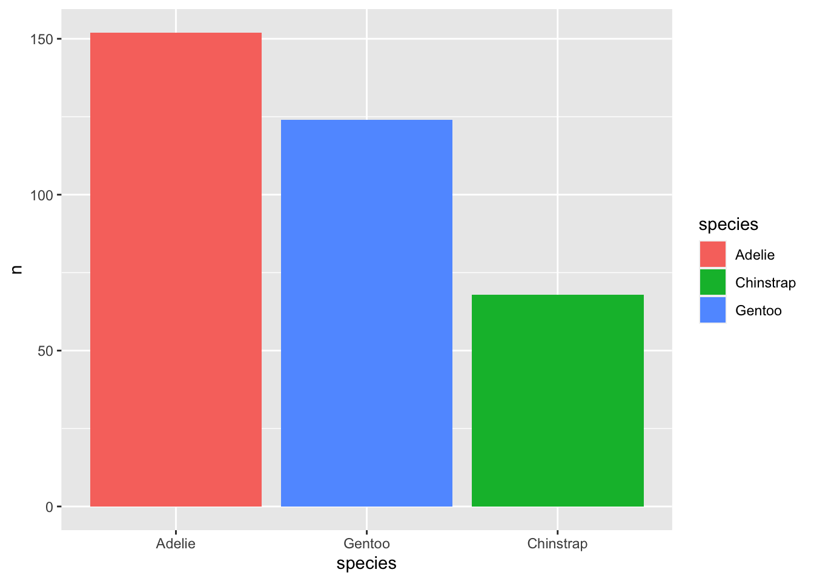
Descripción de todas la columnas de la base de datos
summary(df) species island bill_length_mm bill_depth_mm
Adelie :152 Biscoe :168 Min. :32.10 Min. :13.10
Chinstrap: 68 Dream :124 1st Qu.:39.23 1st Qu.:15.60
Gentoo :124 Torgersen: 52 Median :44.45 Median :17.30
Mean :43.92 Mean :17.15
3rd Qu.:48.50 3rd Qu.:18.70
Max. :59.60 Max. :21.50
NA's :2 NA's :2
flipper_length_mm body_mass_g sex year
Min. :172.0 Min. :2700 female:165 Min. :2007
1st Qu.:190.0 1st Qu.:3550 male :168 1st Qu.:2007
Median :197.0 Median :4050 NA's : 11 Median :2008
Mean :200.9 Mean :4202 Mean :2008
3rd Qu.:213.0 3rd Qu.:4750 3rd Qu.:2009
Max. :231.0 Max. :6300 Max. :2009
NA's :2 NA's :2 Cálculo de la media de la longitud y la profundidad del pico
df %>%
select(bill_length_mm, bill_depth_mm) %>%
summarize(across(.cols = everything(),
~mean(.x, na.rm = TRUE)))# A tibble: 1 × 2
bill_length_mm bill_depth_mm
<dbl> <dbl>
1 43.9 17.2Cálculo de los cuantiles 25, 50 y 75 para la longitud y profundidad del pico en la Isla Biscoe
df %>%
filter(island == "Biscoe") %>%
select(bill_length_mm, bill_depth_mm) %>%
summarize(length25 = quantile(bill_length_mm, probs = 0.25, na.rm = TRUE),
length50 = quantile(bill_length_mm, probs = 0.50, na.rm = TRUE),
length75 = quantile(bill_length_mm, probs = 0.75, na.rm = TRUE),
depth25 = quantile(bill_depth_mm, probs = 0.25, na.rm = TRUE),
depth50 = quantile(bill_depth_mm, probs = 0.50, na.rm = TRUE),
depth75 = quantile(bill_depth_mm, probs = 0.75, na.rm = TRUE))# A tibble: 1 × 6
length25 length50 length75 depth25 depth50 depth75
<dbl> <dbl> <dbl> <dbl> <dbl> <dbl>
1 42 45.8 48.7 14.5 15.5 17Diagrama de cajas (boxplot) vertical de la longitud del pico por especie
df %>%
ggplot(aes(x = species, y = bill_length_mm, fill = species)) +
geom_boxplot()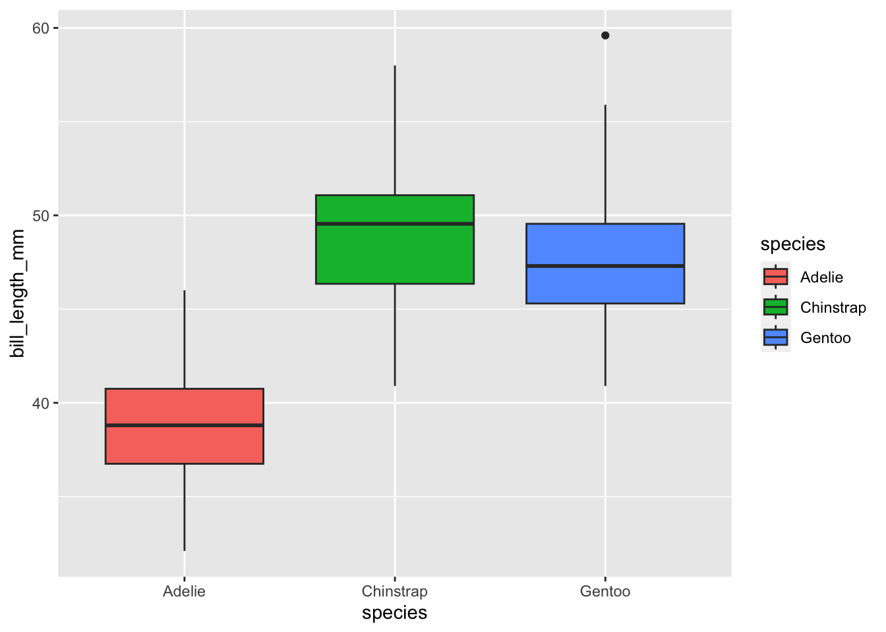
Boxplot horizontal
df %>%
ggplot(aes(x = bill_length_mm, y = species, fill = species)) +
geom_boxplot()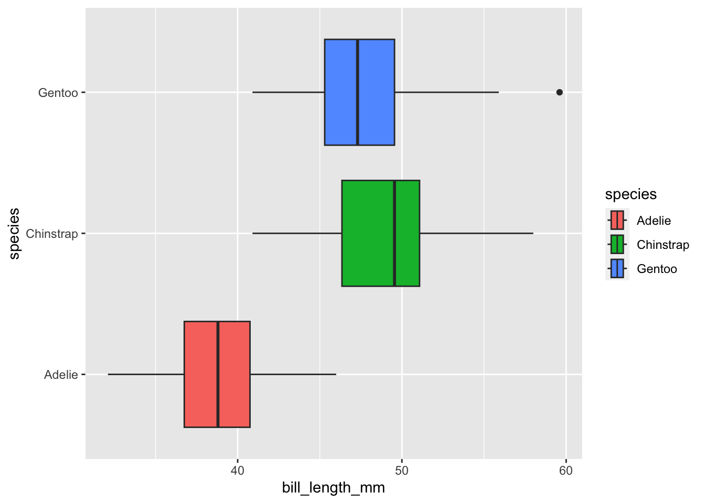
Densidad estimada de la longitud del pico agrupada por sexo
df %>%
na.omit() %>%
ggplot(aes(x = bill_length_mm, fill = sex)) +
geom_density(alpha = 0.4)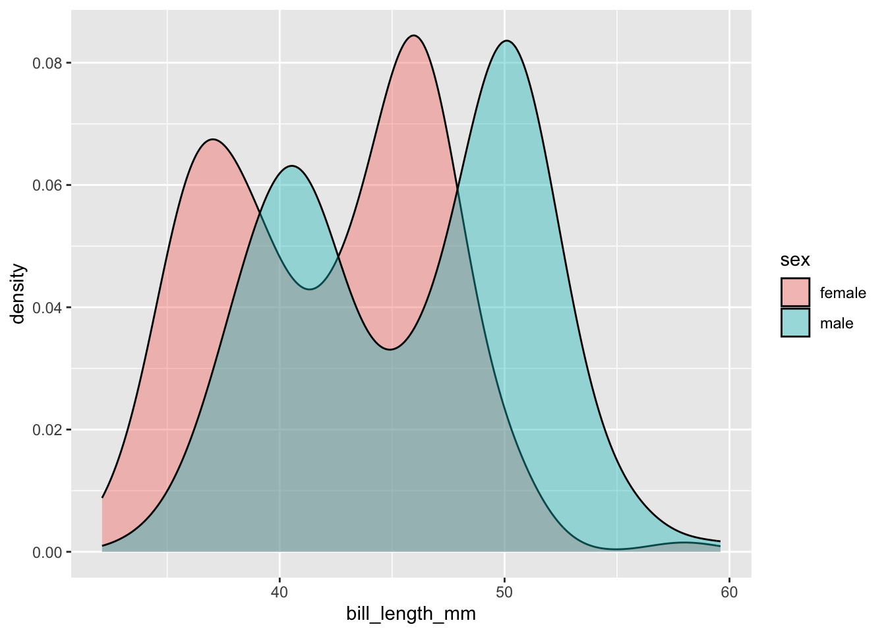
con facetas por especie
df %>%
na.omit() %>%
ggplot(aes(x = bill_length_mm, fill = sex)) +
geom_density(alpha = 0.4) +
facet_wrap(~species)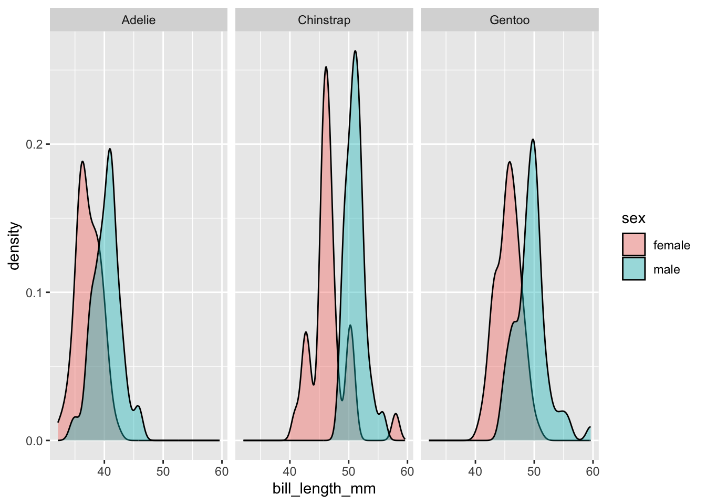
Diagrama de dispersión de la masa corporal en relación con la longitud de las aletas
df %>%
ggplot(aes(x = flipper_length_mm, y = body_mass_g)) +
geom_point()
con línea de regresión añadida
df %>%
ggplot(aes(x = flipper_length_mm, y = body_mass_g)) +
geom_point() +
geom_smooth(method = "lm")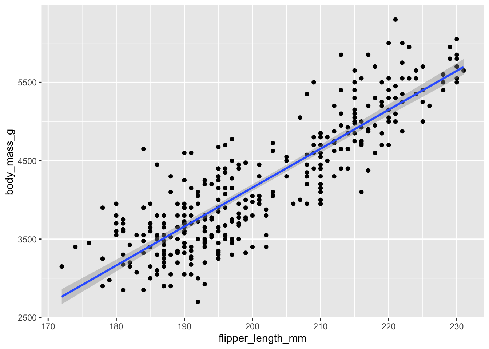
Diferenciado por sexo
df %>%
ggplot(aes(x = flipper_length_mm, y = body_mass_g,
color = sex)) +
geom_point()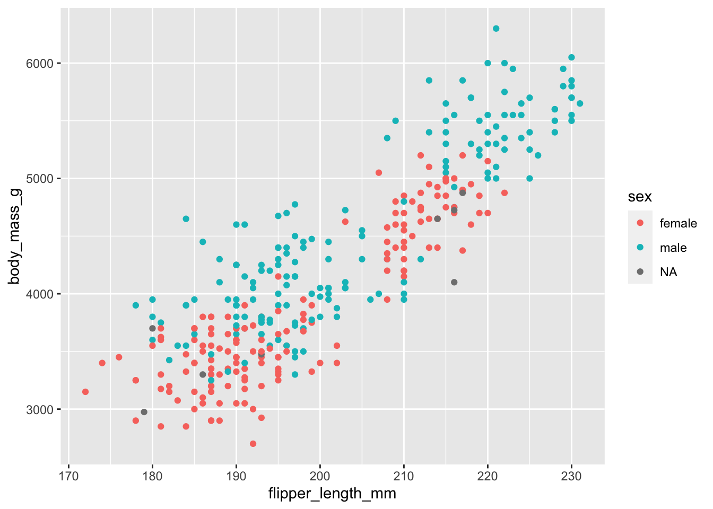
con línea de regresión añadida
df %>%
filter(!is.na(sex)) %>%
ggplot(aes(x = flipper_length_mm, y = body_mass_g,
color = sex)) +
geom_point() +
geom_smooth(method = "lm")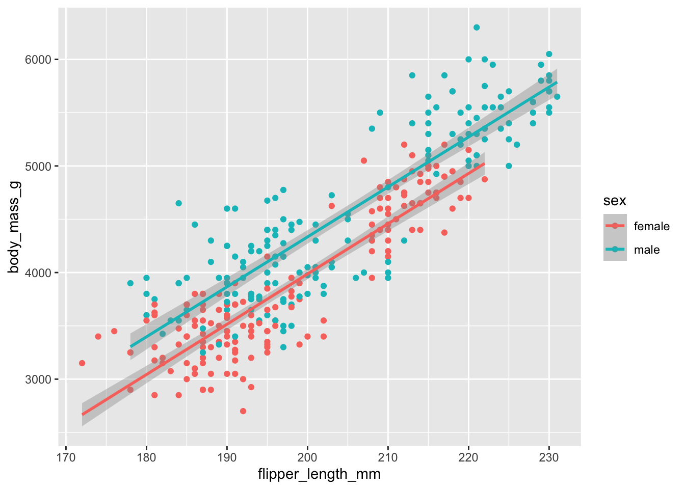
Variación de la masa corporal media a lo largo de los años por especie
df %>%
group_by(species, year) %>%
summarize(N = n(),
avg = mean(body_mass_g, na.rm = TRUE),
SE = sd(body_mass_g, na.rm = TRUE) / sqrt(N),
.groups = "drop") %>%
ggplot(aes(x = year, y = avg)) +
geom_ribbon(aes(ymin = avg - SE, ymax = avg + SE,
fill = species),
alpha = 0.3) +
geom_line(aes(color = species))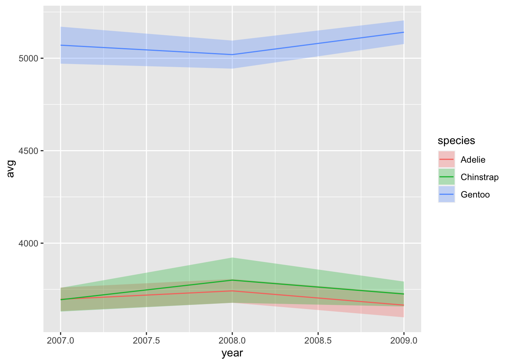
Agrupación - resumen
Media y desviación estándar de la longitud del pico para cada especie
df %>%
group_by(species) %>%
summarize(avg_bill_length = mean(bill_length_mm, na.rm = TRUE),
sd_bill_length = sd(bill_length_mm, na.rm = TRUE))# A tibble: 3 × 3
species avg_bill_length sd_bill_length
<fct> <dbl> <dbl>
1 Adelie 38.8 2.66
2 Chinstrap 48.8 3.34
3 Gentoo 47.5 3.08Media y desviación estándar de la longitud del pico de cada especie por sexo
df %>%
filter(!is.na(sex)) %>%
group_by(species, sex) %>%
summarize(avg_bill_length = mean(bill_length_mm, na.rm = TRUE),
sd_bill_length = sd(bill_length_mm, na.rm = TRUE))# A tibble: 6 × 4
# Groups: species [3]
species sex avg_bill_length sd_bill_length
<fct> <fct> <dbl> <dbl>
1 Adelie female 37.3 2.03
2 Adelie male 40.4 2.28
3 Chinstrap female 46.6 3.11
4 Chinstrap male 51.1 1.56
5 Gentoo female 45.6 2.05
6 Gentoo male 49.5 2.72Agrupación - cálculo
Añadir una nueva columna al fichero de datos que muestre la longitud media de las aletas agrupadas por especies
df <- df %>%
group_by(species) %>%
mutate(mean_flipper_length = mean(flipper_length_mm, na.rm = TRUE))
df %>%
head()# A tibble: 6 × 9
# Groups: species [1]
species island bill_length_mm bill_depth_mm flipper_length_mm body_mass_g
<fct> <fct> <dbl> <dbl> <int> <int>
1 Adelie Torgersen 39.1 18.7 181 3750
2 Adelie Torgersen 39.5 17.4 186 3800
3 Adelie Torgersen 40.3 18 195 3250
4 Adelie Torgersen NA NA NA NA
5 Adelie Torgersen 36.7 19.3 193 3450
6 Adelie Torgersen 39.3 20.6 190 3650
# ℹ 3 more variables: sex <fct>, year <int>, mean_flipper_length <dbl>Puntuación estandarizada (z-score) por especie para la longitud de las aletas
df <- df %>%
group_by(species) %>%
mutate(flipper_z = (flipper_length_mm - mean(flipper_length_mm, na.rm = TRUE)) / sd(flipper_length_mm, na.rm = TRUE))
df %>%
head()# A tibble: 6 × 10
# Groups: species [1]
species island bill_length_mm bill_depth_mm flipper_length_mm body_mass_g
<fct> <fct> <dbl> <dbl> <int> <int>
1 Adelie Torgersen 39.1 18.7 181 3750
2 Adelie Torgersen 39.5 17.4 186 3800
3 Adelie Torgersen 40.3 18 195 3250
4 Adelie Torgersen NA NA NA NA
5 Adelie Torgersen 36.7 19.3 193 3450
6 Adelie Torgersen 39.3 20.6 190 3650
# ℹ 4 more variables: sex <fct>, year <int>, mean_flipper_length <dbl>,
# flipper_z <dbl>Añadir una columna para la media y la desviación estándar por especie para la longitud del pico
df <- df %>%
group_by(species) %>%
mutate(mean_val = mean(bill_length_mm, na.rm = TRUE),
sd_val = sd(bill_length_mm, na.rm = TRUE))
df %>%
head()# A tibble: 6 × 12
# Groups: species [1]
species island bill_length_mm bill_depth_mm flipper_length_mm body_mass_g
<fct> <fct> <dbl> <dbl> <int> <int>
1 Adelie Torgersen 39.1 18.7 181 3750
2 Adelie Torgersen 39.5 17.4 186 3800
3 Adelie Torgersen 40.3 18 195 3250
4 Adelie Torgersen NA NA NA NA
5 Adelie Torgersen 36.7 19.3 193 3450
6 Adelie Torgersen 39.3 20.6 190 3650
# ℹ 6 more variables: sex <fct>, year <int>, mean_flipper_length <dbl>,
# flipper_z <dbl>, mean_val <dbl>, sd_val <dbl>Comandos ifelse / case_when
Crear una nueva columna que codifique las islas como: Biscoe = Isla1 Sueño = Isla2 Torgersen = Isla3
df <- df %>%
mutate(island_code = case_when(island == "Biscoe" ~ "Island1",
island == "Dream" ~ "Island2",
island == "Torgersen" ~ "Island3"))
df %>%
head()# A tibble: 6 × 13
# Groups: species [1]
species island bill_length_mm bill_depth_mm flipper_length_mm body_mass_g
<fct> <fct> <dbl> <dbl> <int> <int>
1 Adelie Torgersen 39.1 18.7 181 3750
2 Adelie Torgersen 39.5 17.4 186 3800
3 Adelie Torgersen 40.3 18 195 3250
4 Adelie Torgersen NA NA NA NA
5 Adelie Torgersen 36.7 19.3 193 3450
6 Adelie Torgersen 39.3 20.6 190 3650
# ℹ 7 more variables: sex <fct>, year <int>, mean_flipper_length <dbl>,
# flipper_z <dbl>, mean_val <dbl>, sd_val <dbl>, island_code <chr>Código Python
Sobre los datos utilizados:
- Datos para el ejemplo :
palmerpenguins(https://github.com/mcnakhaee/palmerpenguins)
Lectura de librerías
import numpy as np
import pandas as pd
import matplotlib.pyplot as plt
import seaborn as sns
from palmerpenguins import load_penguins # Datos de la aplicaciónLectura de datos
df = load_penguins()
df.head() species island bill_length_mm ... body_mass_g sex year
0 Adelie Torgersen 39.1 ... 3750.0 male 2007
1 Adelie Torgersen 39.5 ... 3800.0 female 2007
2 Adelie Torgersen 40.3 ... 3250.0 female 2007
3 Adelie Torgersen NaN ... NaN NaN 2007
4 Adelie Torgersen 36.7 ... 3450.0 female 2007
[5 rows x 8 columns]Análisis exploratorio
Recuento de casos:
Recuento de los NAs en cada columna
df.isnull().any()species False
island False
bill_length_mm True
bill_depth_mm True
flipper_length_mm True
body_mass_g True
sex True
year False
dtype: boollen(df) - df.count()species 0
island 0
bill_length_mm 2
bill_depth_mm 2
flipper_length_mm 2
body_mass_g 2
sex 11
year 0
dtype: int64Para eliminar todas las filas con un NA habría que ejecutar el siguiente código
# df = df.dropna()Número de especies
df['species'].value_counts()Adelie 152
Gentoo 124
Chinstrap 68
Name: species, dtype: int64Número de islas
df['island'].value_counts()Biscoe 168
Dream 124
Torgersen 52
Name: island, dtype: int64Número de especies en cada isla
df[['species', 'island']].value_counts()species island
Gentoo Biscoe 124
Chinstrap Dream 68
Adelie Dream 56
Torgersen 52
Biscoe 44
dtype: int64Tabla 3x3 de recuento de especies por isla
pd.crosstab(df['species'], df['island'])island Biscoe Dream Torgersen
species
Adelie 44 56 52
Chinstrap 0 68 0
Gentoo 124 0 0Tabla 3x3 de proporciones de especies por isla
pd.crosstab(df['species'], df['island']) / len(df)island Biscoe Dream Torgersen
species
Adelie 0.127907 0.162791 0.151163
Chinstrap 0.000000 0.197674 0.000000
Gentoo 0.360465 0.000000 0.000000Gráfico de barras de especies
sns.countplot(x = 'species', data = df);
plt.show()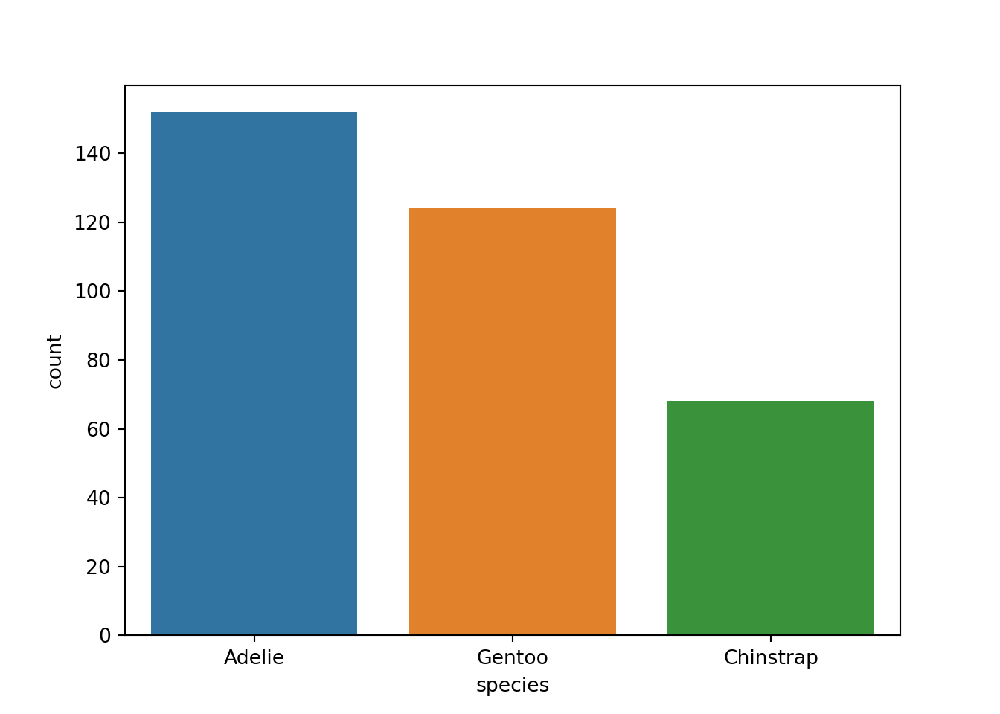
Descripción de todas la columnas de la base de datos
df.describe() bill_length_mm bill_depth_mm ... body_mass_g year
count 342.000000 342.000000 ... 342.000000 344.000000
mean 43.921930 17.151170 ... 4201.754386 2008.029070
std 5.459584 1.974793 ... 801.954536 0.818356
min 32.100000 13.100000 ... 2700.000000 2007.000000
25% 39.225000 15.600000 ... 3550.000000 2007.000000
50% 44.450000 17.300000 ... 4050.000000 2008.000000
75% 48.500000 18.700000 ... 4750.000000 2009.000000
max 59.600000 21.500000 ... 6300.000000 2009.000000
[8 rows x 5 columns]Cálculo de la media de la longitud y la profundidad del pico
df[['bill_length_mm', 'bill_depth_mm']].mean()bill_length_mm 43.92193
bill_depth_mm 17.15117
dtype: float64Cálculo de los cuantiles 25, 50 y 75 para la longitud y profundidad del pico en la Isla Biscoe
df.loc[df['island'] == 'Biscoe', ['bill_length_mm', 'bill_depth_mm']].quantile([0.25, 0.5, 0.75]) bill_length_mm bill_depth_mm
0.25 42.0 14.5
0.50 45.8 15.5
0.75 48.7 17.0Boxplot vertical de la longitud del pico por especie
sns.boxplot(x = 'species', y = 'bill_length_mm', data = df, orient = 'v', palette = 'rainbow');
plt.show()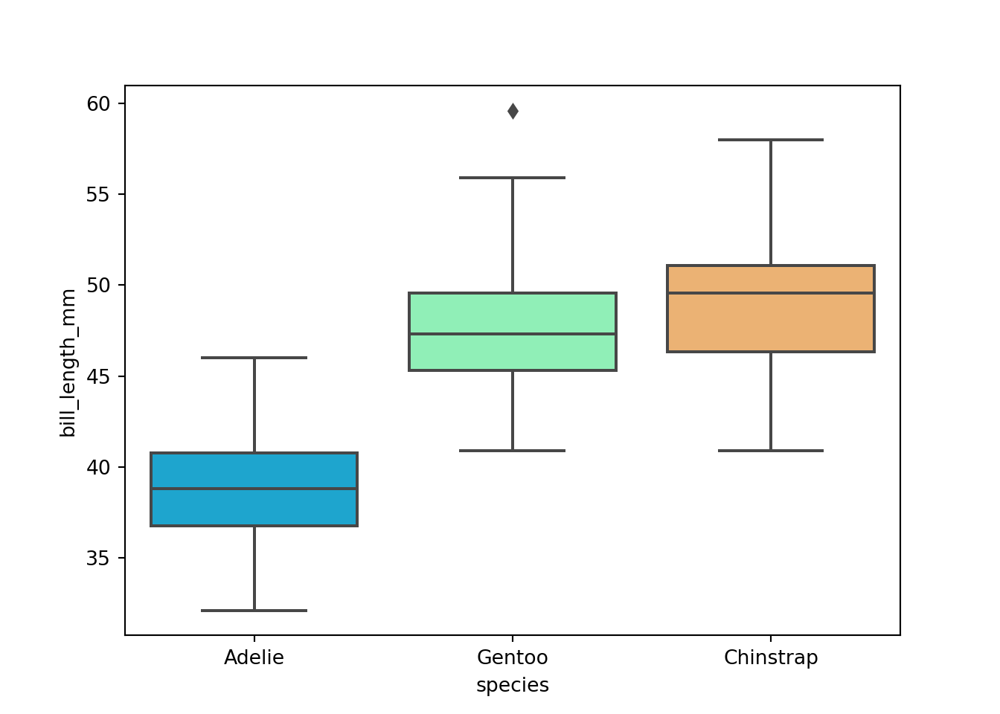
Boxplot horizontal
sns.boxplot(x = 'bill_length_mm', y = 'species', data = df, orient = 'h', palette = 'rainbow');
plt.show()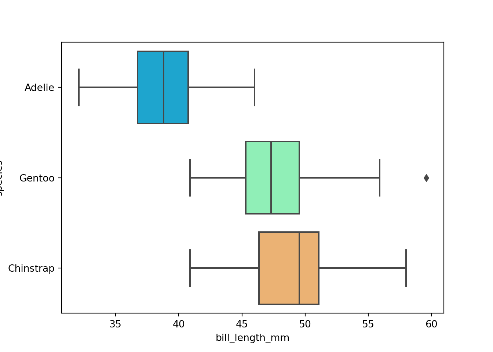
Densidad estimada de la longitud del pico agrupada por sexo
sns.displot(x = 'bill_length_mm',
data = df,
kind = 'kde',
hue = 'sex',
fill = True);
plt.show()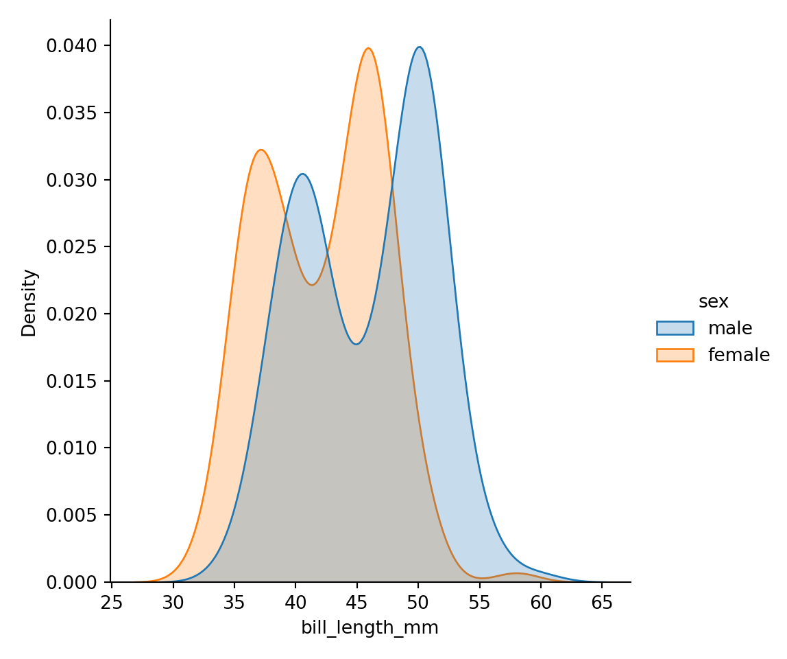
con facetas por especie
sns.displot(x = 'bill_length_mm',
data = df,
kind = 'kde',
hue = 'sex',
col = 'species',
fill = True);
plt.show()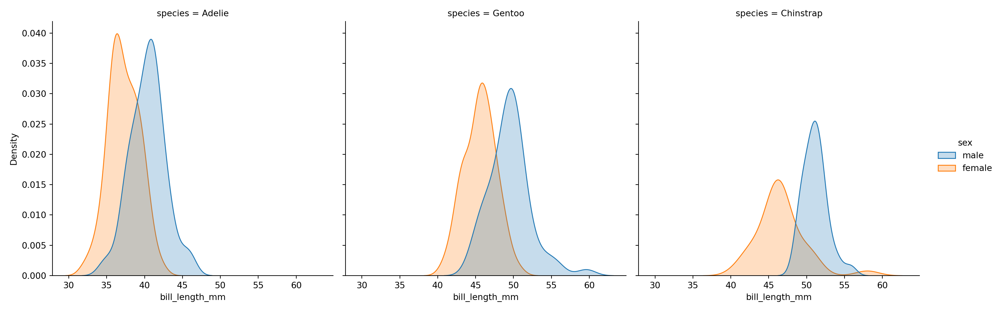
Diagrama de dispersión de la masa corporal en relación con la longitud de las aletas
sns.relplot(x = 'flipper_length_mm', y = 'body_mass_g', data = df);
plt.show()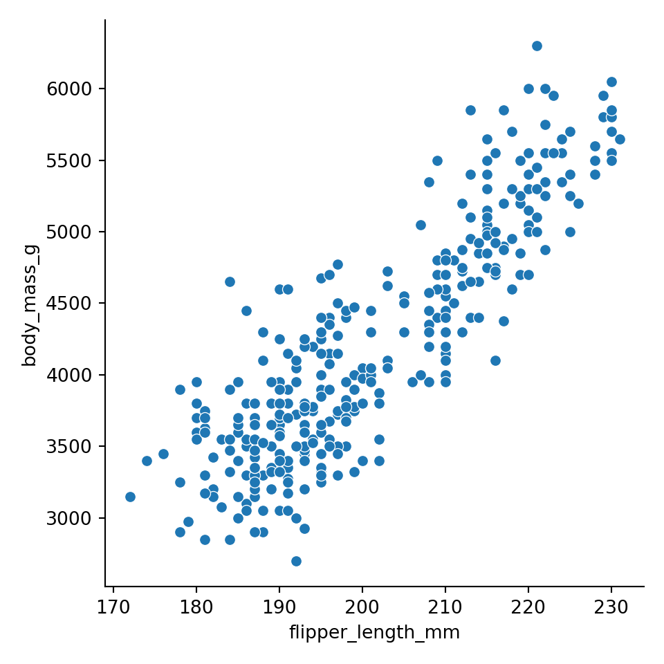
con línea de regresión añadida
sns.lmplot(x = 'flipper_length_mm', y = 'body_mass_g', data = df);
plt.show()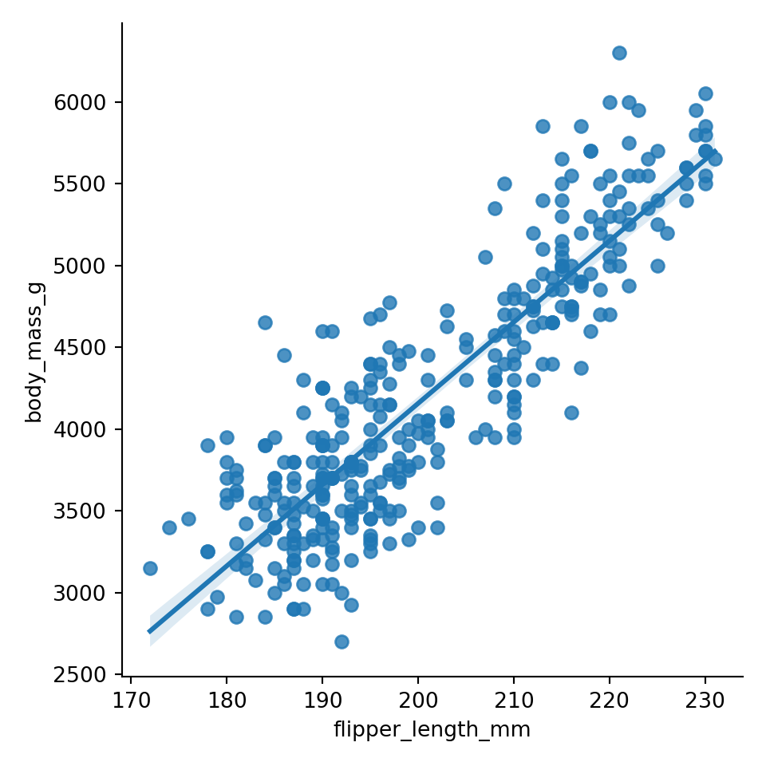
Diferenciado por sexo
sns.relplot(x = 'flipper_length_mm', y = 'body_mass_g', data = df, hue = 'sex');
plt.show()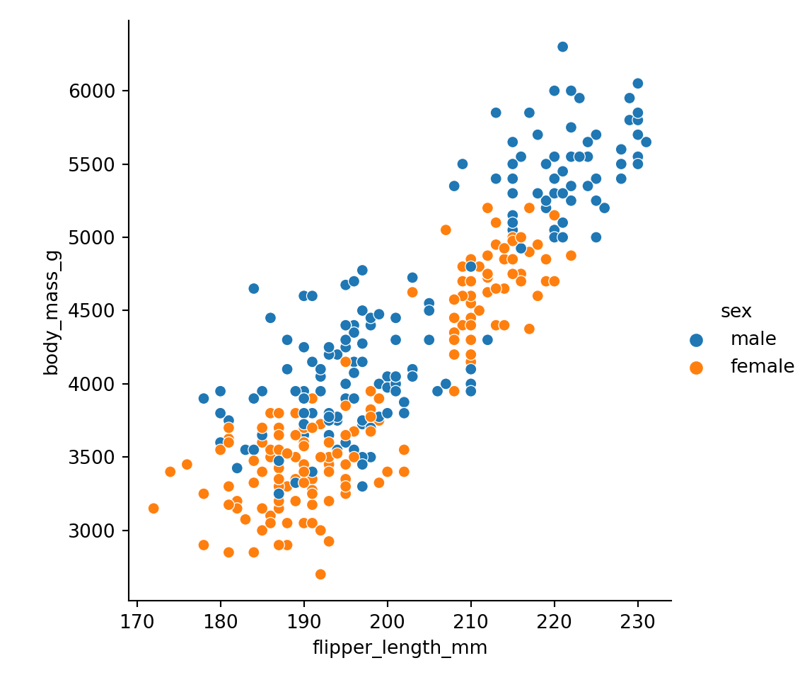
y con línea de regresión añadida
sns.lmplot(x = 'flipper_length_mm', y = 'body_mass_g', data = df, hue = 'sex');
plt.show()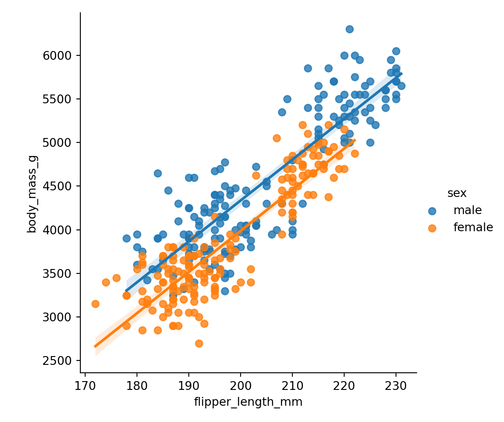
Variación de la masa corporal media a lo largo de los años por especie
sns.relplot(x = 'year', y = 'body_mass_g', kind = 'line',
hue = 'species', data = df);
plt.show()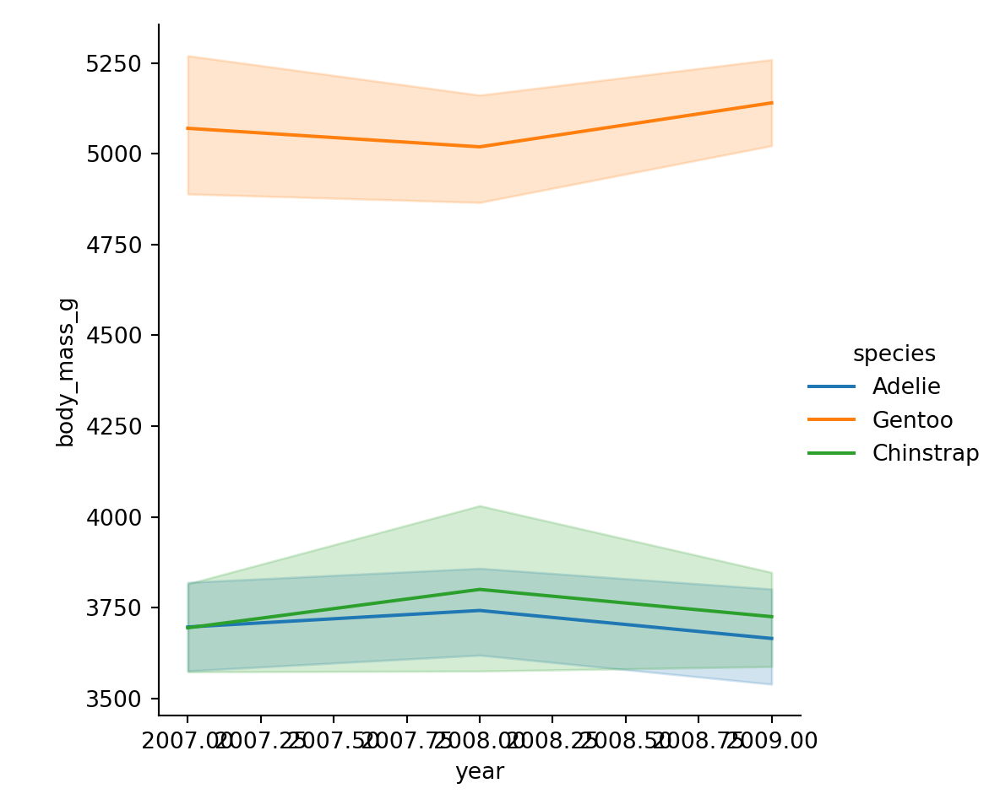
Agrupación - resumen
Media y desviación estándar de la longitud del pico para cada especie
species_bill_length = (df
.groupby('species')
.agg(avg_bill_length = ('bill_length_mm', 'mean'),
sd_bill_length = ('bill_length_mm', 'std')).round(1)
.reset_index())
species_bill_length species avg_bill_length sd_bill_length
0 Adelie 38.8 2.7
1 Chinstrap 48.8 3.3
2 Gentoo 47.5 3.1Media y desviación estándar de la longitud del pico de cada especie por sexo
species_bill_length_sex = (df
.groupby(['species', 'sex'])
.agg(avg_bill_length = ('bill_length_mm', 'mean'),
sd_bill_length = ('bill_length_mm', 'std')).round(1)
.reset_index())
species_bill_length_sex species sex avg_bill_length sd_bill_length
0 Adelie female 37.3 2.0
1 Adelie male 40.4 2.3
2 Chinstrap female 46.6 3.1
3 Chinstrap male 51.1 1.6
4 Gentoo female 45.6 2.1
5 Gentoo male 49.5 2.7Agrupación - cálculo
Añadir una nueva columna al fichero de datos que muestre la longitud media de las aletas agrupadas por especies
df['mean_flipper_length'] = df.groupby('species')['flipper_length_mm'].transform('mean')
df.head() species island bill_length_mm ... sex year mean_flipper_length
0 Adelie Torgersen 39.1 ... male 2007 189.953642
1 Adelie Torgersen 39.5 ... female 2007 189.953642
2 Adelie Torgersen 40.3 ... female 2007 189.953642
3 Adelie Torgersen NaN ... NaN 2007 189.953642
4 Adelie Torgersen 36.7 ... female 2007 189.953642
[5 rows x 9 columns]Puntuación estandarizada (z-score) por especie para la longitud de las aletas
df['flipper_z'] = df.groupby('species')['flipper_length_mm'].transform(lambda x: (x - x.mean()) / x.std()).round(2)
df.head() species island bill_length_mm ... year mean_flipper_length flipper_z
0 Adelie Torgersen 39.1 ... 2007 189.953642 -1.37
1 Adelie Torgersen 39.5 ... 2007 189.953642 -0.60
2 Adelie Torgersen 40.3 ... 2007 189.953642 0.77
3 Adelie Torgersen NaN ... 2007 189.953642 NaN
4 Adelie Torgersen 36.7 ... 2007 189.953642 0.47
[5 rows x 10 columns]Añadir una columna para la media y la desviación estándar por especie para la longitud del pico
df = df.assign(
mean_val = df.groupby(["species"]).bill_length_mm.transform('mean'),
sd_val = df.groupby(["species"]).bill_length_mm.transform('std'))
df.head() species island bill_length_mm ... flipper_z mean_val sd_val
0 Adelie Torgersen 39.1 ... -1.37 38.791391 2.663405
1 Adelie Torgersen 39.5 ... -0.60 38.791391 2.663405
2 Adelie Torgersen 40.3 ... 0.77 38.791391 2.663405
3 Adelie Torgersen NaN ... NaN 38.791391 2.663405
4 Adelie Torgersen 36.7 ... 0.47 38.791391 2.663405
[5 rows x 12 columns]Comandos def / where
Crear una nueva columna que codifique las islas como: Biscoe = Isla1 Sueño = Isla2 Torgersen = Isla3
# def
def islad_transform(island):
if island == 'Biscoe':
return 'Island1'
if island == 'Dream':
return 'Island2'
if island == 'Torgersen':
return 'Island3'
df["island_code"] = df["island"].map(lambda x: islad_transform(x))
df.head() species island bill_length_mm ... mean_val sd_val island_code
0 Adelie Torgersen 39.1 ... 38.791391 2.663405 Island3
1 Adelie Torgersen 39.5 ... 38.791391 2.663405 Island3
2 Adelie Torgersen 40.3 ... 38.791391 2.663405 Island3
3 Adelie Torgersen NaN ... 38.791391 2.663405 Island3
4 Adelie Torgersen 36.7 ... 38.791391 2.663405 Island3
[5 rows x 13 columns]# numpy
df['island_code2'] = np.where(df['island'] == 'Biscoe', 'Island1',
(np.where(df['island'] == 'Dream', 'Island2', 'Island3')))
df.head() species island bill_length_mm ... sd_val island_code island_code2
0 Adelie Torgersen 39.1 ... 2.663405 Island3 Island3
1 Adelie Torgersen 39.5 ... 2.663405 Island3 Island3
2 Adelie Torgersen 40.3 ... 2.663405 Island3 Island3
3 Adelie Torgersen NaN ... 2.663405 Island3 Island3
4 Adelie Torgersen 36.7 ... 2.663405 Island3 Island3
[5 rows x 14 columns]